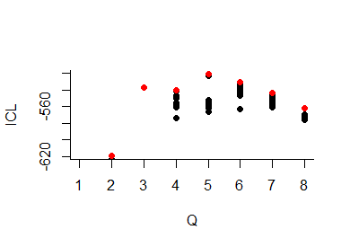
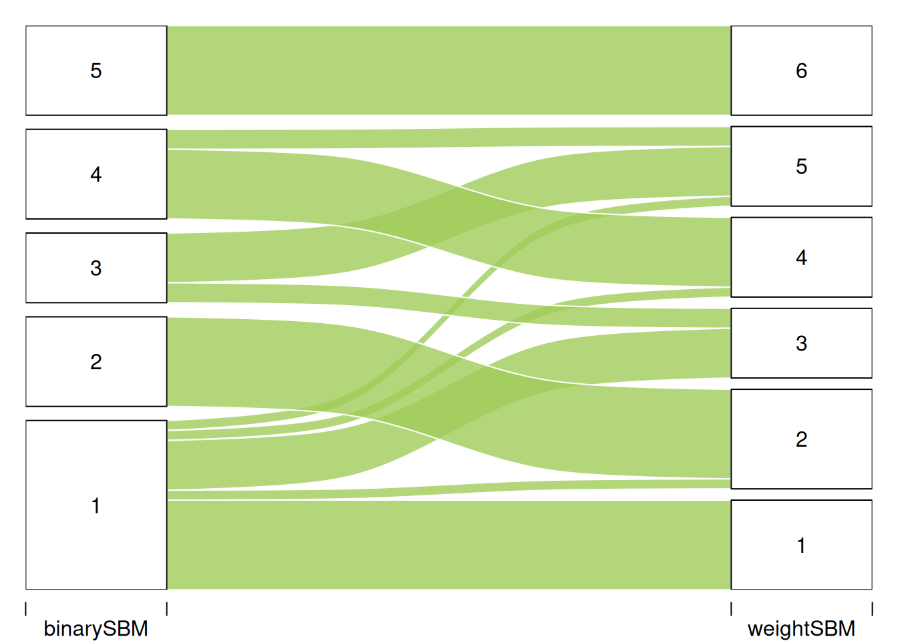
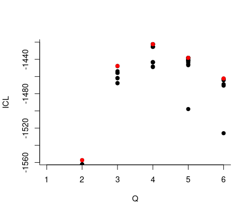

install.packages("sbm")
install.packages("GGally") # To plot networks
install.packages('network')
install.packages('RColorBrewer') # to have nice colors
install.packages('knitr') # to plot nice tablesTutorial on Stochastic Block Models
April 2024
0.Requirements
This tutorial illustrates the use of block models for the analysis of (ecological) network. Is is mainly based on the vignette of the package sbm. The package is on the CRAN. Its development version is on Github.
The packages required for the analysis are sbm plus some others for data manipulation and representation:
library(sbm)
library(ggplot2)
library(network)
library(GGally)
library(RColorBrewer)
library(knitr)1. Simulating network data
Let us first simulate networks using the sbm package.
1.A. Community network
First define the parameters.
K = 3; # nb of blocks
nbNodes <- 50 # nb of vertices
blockProp <- c(.25, 0.5 ,.25) # group proportions
connectParam <- list(mean = diag(.4, 3) + 0.05) # connectivity matrix: affiliation networkWe can now simulate with the sampleSimpleSBM function.
mySampler <- sampleSimpleSBM(nbNodes, blockProp = blockProp, connectParam = connectParam , model = 'bernoulli',directed = TRUE, dimLabels = 'Species')
mySampler
#> Simple Stochastic Block Model -- bernoulli variant
#> =====================================================================
#> Dimension = ( 50 ) - ( 3 ) blocks and no covariate(s).
#> =====================================================================
#> * Useful fields
#> $nbNodes, $modelName, $dimLabels, $nbBlocks, $nbCovariates, $nbDyads
#> $blockProp, $connectParam, $covarParam, $covarList, $covarEffect
#> $expectation, $indMemberships, $memberships
#> * R6 and S3 methods
#> $rNetwork, $rMemberships, $rEdges, plot, print, coefWe represent the data using either the adjacency matrix or the graphe representation.
colSet <- RColorBrewer::brewer.pal(n = 8, name = "Set2")
GGally::ggnet2(mySampler$networkData,label = TRUE,color=colSet[1])
plotOptions <- list(colNames = TRUE, rowNames = TRUE)
sbm::plotMyMatrix(mySampler$networkData,dimLabels = list(row = "species", col = "species"),plotOptions = plotOptions)
A few modification as to be done if we want to highlight the blocs.
U <- order(mySampler$memberships)
Z <- mySampler$memberships[U]
myMat <- mySampler$networkData[U,U]
net = network(myMat, directed = TRUE)
my_color_nodes_col <- my_color_nodes <- rep(colSet[1],nbNodes)
for (k in 2:K){
my_color_nodes[nbNodes-which(Z==k) + 1] <- colSet[k]
my_color_nodes_col[which(Z==k)] <- colSet[k]
}
ggnet2(net,node.color = Z, palette = "Set2",label = TRUE,arrow.size = 6, arrow.gap = 0.017,label.size = 3)
sbm::plotMyMatrix(myMat,dimLabels = list(row = "species", col = "species"),plotOptions = plotOptions)+ theme(axis.text.x = element_text(color=my_color_nodes_col),axis.text.y = element_text(color=my_color_nodes))
#> Warning: Vectorized input to `element_text()` is not officially supported.
#> ℹ Results may be unexpected or may change in future versions of ggplot2.
#> Vectorized input to `element_text()` is not officially supported.
#> ℹ Results may be unexpected or may change in future versions of ggplot2.
Exercice Modify the structure by choosing other parameters and compute the statistics that you learned the previous days. Use igraph to plot your new networks. For instance, you may try to simulate a foodweb with 5 trophic levels.
1.B. Bipartite networks
Exercice Use the function sampleBipartiteSBM to simulate a weighted (counts) bipartite network with the following parameters.
K = 3; # nb of blocks
L = 4
nbNodes <- c(50,80) # nb of vertices
blockProp <- list(row = c(.25, 0.5 ,.25),col=c(0.1,0.3,0.4,0.2)) # group proportions
means <- matrix(rbinom(K*L, 30, 0.25), K, L) # connectivity matrix
means[3,2] = means[1,4] = 0
connectParam <- list(mean = means)2. Analyzing an ecological data set
2.A. The data set: antagonistic tree/fungus interaction network
We consider the fungus-tree interaction network studied by Vacher, Piou, and Desprez-Loustau (2008), available with the package sbm :
data("fungusTreeNetwork")
str(fungusTreeNetwork, max.level = 1)
#> List of 5
#> $ tree_names : Factor w/ 51 levels "Abies alba","Abies grandis",..: 1 2 3 14 42 4 5 6 7 8 ...
#> $ fungus_names: Factor w/ 154 levels "Amphiporthe leiphaemia",..: 1 2 3 4 5 6 7 8 9 10 ...
#> $ tree_tree : num [1:51, 1:51] 0 12 9 3 2 2 0 0 2 7 ...
#> $ fungus_tree : int [1:154, 1:51] 0 0 0 0 1 1 1 0 0 0 ...
#> $ covar_tree :List of 3This data set provides information about \(154\) fungi sampled on \(51\) tree species. It is a list with the following entries:
tree_names: list of the tree species namesfungus_names: list of the fungus species namestree_tree: weighted tree-tree interactions (number of common fungal species two tree species host)fungus_tree: binary fungus-tree interactionscovar_tree: covariates associated to pairs of trees (namely genetic, taxonomic and geographic distances)
We first consider the tree-tree interactions resulting into a Simple Network. Then we consider the bipartite network between trees and fungi.
2.B. Analysis of the tree/tree data
2.B.1 Tree-tree binary interaction networks
We first consider the binary network where an edge is drawn between two trees when they do share a least one common fungi:
tree_tree_binary <- 1 * (fungusTreeNetwork$tree_tree != 0)The simple function plotMyMatrix can be use to represent simple or bipartite SBM:
plotMyMatrix(tree_tree_binary, dimLabels = list(row = 'tree', col = 'tree'))
We look for some latent structure of the network by adjusting a simple SBM with the function estimateSimpleSBM. We assume the our matrix is the realisation of the SBM: \[\begin{align*}
(Z_i) \text{ i.i.d.} \qquad & Z_i \sim \mathcal{M}(1, \pi) \\
(Y_{ij}) \text{ indep.} \mid (Z_i) \qquad & (Y_{ij} \mid Z_i=k, Z_j = \ell) \sim \mathcal{B}(\alpha_{k\ell})
\end{align*}\] and infer this model with sbm (used package : blockmodels). Note that simpleSBM refers to standard networks (w.r.t. bipartite)
mySimpleSBM <- tree_tree_binary %>%
estimateSimpleSBM("bernoulli",
dimLabels ='tree',
estimOptions = list(verbosity = 2, plot=FALSE))
#> -> Estimation for 1 groups
#>
-> Computation of eigen decomposition used for initalizations
#>
#> -> Pass 1
#> -> With ascending number of groups
#>
-> With descending number of groups
#>
-> Pass 2
#> -> With ascending number of groups
#>
-> With descending number of groups
#>
-> Pass 3
#> -> With ascending number of groups
#> -> With descending number of groups
Once fitted, the user can manipulate the fitted model by accessing the various fields and methods enjoyed by the class simpleSBMfit. Most important fields and methods are recalled to the user via the show method:
class(mySimpleSBM)
#> [1] "SimpleSBM_fit" "SimpleSBM" "SBM" "R6"For instance,
mySimpleSBM$nbBlocks
#> [1] 5
mySimpleSBM$nbNodes
#> tree
#> 51
mySimpleSBM$nbCovariates
#> [1] 0The plot method is available as a S3 or R6 method. The default represents the network data reordered according to the memberships estimated in the SBM
plot(mySimpleSBM, type = "data", dimLabels = list(row = 'tree', col = 'tree'))
One can also plot the expected network which, in case of the Bernoulli model, corresponds to the probability of connection between any pair of nodes in the network.
plot(mySimpleSBM, type = "expected",estimOptions=list(legend=TRUE))
About model selection and choice of the number of blocks
During the estimation, a certain range of models are explored corresponding to different number of blocks. By default, the best model in terms of Integrated Classification Likelihood is sent back. IN fact, all the model are stored internally. The user can have a quick glance at them via the $storedModels field:
mySimpleSBM$storedModels %>% kable()| indexModel | nbParams | nbBlocks | ICL | loglik |
|---|---|---|---|---|
| 1 | 1 | 1 | -883.3334 | -879.7581 |
| 2 | 4 | 2 | -619.0799 | -606.3880 |
| 3 | 8 | 3 | -537.5179 | -512.1339 |
| 4 | 13 | 4 | -540.6318 | -498.9806 |
| 5 | 19 | 5 | -520.6645 | -459.1706 |
| 6 | 26 | 6 | -530.6278 | -445.7159 |
| 7 | 34 | 7 | -544.0191 | -432.1138 |
| 8 | 43 | 8 | -562.1450 | -419.6710 |
We can then what models are competitive in terms of model selection by checking the ICL
mySimpleSBM$storedModels %>%
ggplot() +
aes(x = nbBlocks, y = ICL) + geom_line() + geom_point(alpha = 0.5)
The 4-block model could have been a good choice too, in place of the 5-block model. The user can update the current simpleSBMfit thanks to the the setModel method:
mySimpleSBM$setModel(4)
mySimpleSBM$nbBlocks
#> [1] 4
mySimpleSBM$plot(type = 'expected')
Going back to the best model
mySimpleSBM$setModel(5)2.B.3 Analysis of the weighted interaction network
Instead of considering the binary network tree-tree we may consider the weighted network where the link between two trees is the number of fungi they share.
We plot the matrix with function plotMyMatrix:
tree_tree <- fungusTreeNetwork$tree_tree
plotMyMatrix(tree_tree, dimLabels = list(row = 'tree', col = 'tree'))
Here again, we look for some latent structure of the network by adjusting a simple SBM with the function estimateSimpleSBM, considering a Poisson distribution on the edges.
mySimpleSBMPoisson <- tree_tree %>%
estimateSimpleSBM("poisson", directed = FALSE,
estimOptions = list(verbosity = 2 , plot = FALSE),
dimLabels = c('tree'))
#> -> Estimation for 1 groups
#>
-> Computation of eigen decomposition used for initalizations
#>
#> -> Pass 1
#> -> With ascending number of groups
#>
-> With descending number of groups
#>
-> Pass 2
#> -> With ascending number of groups
#>
-> With descending number of groups
#>
-> Pass 3
#> -> With ascending number of groups
#>
-> With descending number of groups
#>
-> Pass 4
#> -> With ascending number of groups
#> -> With descending number of groups
Once fitted, the user can manipulate the fitted model by accessing the various fields and methods enjoyed by the class simpleSBMfit. Most important fields and methods are recalled to the user via the show method:
class(mySimpleSBMPoisson)
#> [1] "SimpleSBM_fit" "SimpleSBM" "SBM" "R6"
mySimpleSBMPoisson
#> Fit of a Simple Stochastic Block Model -- poisson variant
#> =====================================================================
#> Dimension = ( 51 ) - ( 6 ) blocks and no covariate(s).
#> =====================================================================
#> * Useful fields
#> $nbNodes, $modelName, $dimLabels, $nbBlocks, $nbCovariates, $nbDyads
#> $blockProp, $connectParam, $covarParam, $covarList, $covarEffect
#> $expectation, $indMemberships, $memberships
#> * R6 and S3 methods
#> $rNetwork, $rMemberships, $rEdges, plot, print, coef
#> * Additional fields
#> $probMemberships, $loglik, $ICL, $storedModels,
#> * Additional methods
#> predict, fitted, $setModel, $reorderFor instance,
mySimpleSBMPoisson$nbBlocks
#> [1] 6
mySimpleSBMPoisson$nbNodes
#> tree
#> 51
mySimpleSBMPoisson$nbCovariates
#> [1] 0We now plot the matrix reordered according to the memberships estimated in the SBM
plot(mySimpleSBMPoisson, type = "data")
One can also plot the expected network which, in case of the Poisson model, corresponds to the expectation of connection between any pair of nodes in the network.
plot(mySimpleSBMPoisson, type = "expected")
The composition of the clusters/blocks are given by :
lapply(1:mySimpleSBMPoisson$nbBlocks,
function(q){fungusTreeNetwork$tree_names[mySimpleSBMPoisson$memberships == q]})
#> [[1]]
#> [1] Abies alba
#> [2] Abies grandis
#> [3] Cedrus spp (Cedrus atlantica, Cedrus libani)
#> [4] Larix decidua
#> [5] Picea excelsa
#> [6] Pinus nigra laricio
#> [7] Pinus pinaster
#> [8] Pinus sylvestris
#> [9] Pseudotsuga menziesii
#> 51 Levels: Abies alba Abies grandis Abies nordmanniana ... Ulmus spp (Ulmus minor, Ulmus laevis, Ulmus glabra)
#>
#> [[2]]
#> [1] Large Maples (Acer platanoides, Acer pseudoplatanus)
#> [2] Fagus silvatica
#> [3] Fraxinus spp (Fraxinus angustifolia, Fraxinus excelsior)
#> [4] Juglans spp (Juglans nigra, Juglans regia)
#> [5] Cultivated Poplars (Populus trichocarpa, P. canescens, P.alba, P.nigra and their cultivated hybrids)
#> [6] Prunus avium
#> [7] Quercus petraea
#> [8] Quercus robur
#> [9] Quercus rubra
#> [10] Sorbus torminalis
#> 51 Levels: Abies alba Abies grandis Abies nordmanniana ... Ulmus spp (Ulmus minor, Ulmus laevis, Ulmus glabra)
#>
#> [[3]]
#> [1] Abies nordmanniana Larix kaempferi Picea sitchensis Pinus halepensis
#> [5] Pinus nigra nigra Pinus strobus Pinus uncinata
#> 51 Levels: Abies alba Abies grandis Abies nordmanniana ... Ulmus spp (Ulmus minor, Ulmus laevis, Ulmus glabra)
#>
#> [[4]]
#> [1] Small Maples (Acer campestre, Acer monspessulanum, Acer negundo, Acer opalus)
#> [2] Alnus glutinosa
#> [3] Castanea sativa
#> [4] Quercus ilex
#> [5] Quercus pubescens
#> [6] Quercus suber
#> [7] Sorbus aria
#> [8] Tilia spp (Tilia platiphyllos, Tilia cordata)
#> 51 Levels: Abies alba Abies grandis Abies nordmanniana ... Ulmus spp (Ulmus minor, Ulmus laevis, Ulmus glabra)
#>
#> [[5]]
#> [1] Cupressus sempervirens
#> [2] Pinus brutia (Pinus brutia, Pinus brutia eldarica)
#> [3] Pinus cembra
#> [4] Pinus pinea
#> [5] Pinus radiata
#> [6] Pinus taeda
#> [7] Platanus hybrida
#> [8] Tsuga heterophylla
#> 51 Levels: Abies alba Abies grandis Abies nordmanniana ... Ulmus spp (Ulmus minor, Ulmus laevis, Ulmus glabra)
#>
#> [[6]]
#> [1] Betulus spp (Betula pendula, Betula pubescens)
#> [2] Carpinus betulus
#> [3] Populus tremula
#> [4] Quercus pyrenaica
#> [5] Sorbus aucuparia
#> [6] Sorbus domestica
#> [7] Taxus baccata
#> [8] Thuja plicata
#> [9] Ulmus spp (Ulmus minor, Ulmus laevis, Ulmus glabra)
#> 51 Levels: Abies alba Abies grandis Abies nordmanniana ... Ulmus spp (Ulmus minor, Ulmus laevis, Ulmus glabra)We are interested in comparing the two clusterings. To do so we use the alluvial flow plots.
listMemberships <- list(binarySBM = mySimpleSBM$memberships)
listMemberships$weightSBM <- mySimpleSBMPoisson$memberships
P <- plotAlluvial(listMemberships)
2.B.4 Introduction of covariates
We have on each pair of trees 3 covariates, namely the genetic distance, the taxonomic distance and the geographic distance. Each covariate has to be introduced as a matrix: \(X^k_{ij}\) corresponds to the value of the \(k\)-th covariate describing the couple \((i,j)\).
We can also use the sbm package to estimate the parameters of the SBM with covariates.
mySimpleSBMCov<- estimateSimpleSBM(
netMat = as.matrix(tree_tree),
model = 'poisson',
directed =FALSE,
dimLabels =c('tree'),
covariates = fungusTreeNetwork$covar_tree,
estimOptions = list(verbosity = 0))
- We select the best number of clusters (with respect to the ICL criteria)
mySimpleSBMCov$nbBlocks
#> [1] 4- We can now extract the parameters of interest, namely (\(\lambda\), \(\pi\)) and the clustering of the nodes.
mySimpleSBMCov$connnectParam
#> NULL
mySimpleSBMCov$blockProp
#> [1] 0.3715916 0.2159544 0.2354117 0.1770424
mySimpleSBMCov$memberships
#> [1] 1 1 2 1 2 2 4 4 2 1 3 1 1 1 1 2 1 2 3 3 2 1 2 1 3 3 2 1 3 2 3 1 4 1 1 3 1 3
#> [39] 4 1 1 3 2 4 4 1 4 4 3 3 4
mySimpleSBMCov$covarParam
#> [,1]
#> [1,] 0.1976220
#> [2,] -2.0550285
#> [3,] -0.3582768- The composition of the clusters/blocks are given by:
lapply(1:mySimpleSBMCov$nbBlocks,function(q){fungusTreeNetwork$tree_names[mySimpleSBMCov$memberships == q]})
#> [[1]]
#> [1] Abies alba
#> [2] Abies grandis
#> [3] Large Maples (Acer platanoides, Acer pseudoplatanus)
#> [4] Cedrus spp (Cedrus atlantica, Cedrus libani)
#> [5] Fagus silvatica
#> [6] Fraxinus spp (Fraxinus angustifolia, Fraxinus excelsior)
#> [7] Juglans spp (Juglans nigra, Juglans regia)
#> [8] Larix decidua
#> [9] Picea excelsa
#> [10] Pinus nigra laricio
#> [11] Pinus pinaster
#> [12] Pinus sylvestris
#> [13] Cultivated Poplars (Populus trichocarpa, P. canescens, P.alba, P.nigra and their cultivated hybrids)
#> [14] Prunus avium
#> [15] Pseudotsuga menziesii
#> [16] Quercus petraea
#> [17] Quercus robur
#> [18] Quercus rubra
#> [19] Sorbus torminalis
#> 51 Levels: Abies alba Abies grandis Abies nordmanniana ... Ulmus spp (Ulmus minor, Ulmus laevis, Ulmus glabra)
#>
#> [[2]]
#> [1] Abies nordmanniana
#> [2] Small Maples (Acer campestre, Acer monspessulanum, Acer negundo, Acer opalus)
#> [3] Alnus glutinosa
#> [4] Castanea sativa
#> [5] Larix kaempferi
#> [6] Picea sitchensis
#> [7] Pinus halepensis
#> [8] Pinus nigra nigra
#> [9] Pinus strobus
#> [10] Pinus uncinata
#> [11] Sorbus aria
#> 51 Levels: Abies alba Abies grandis Abies nordmanniana ... Ulmus spp (Ulmus minor, Ulmus laevis, Ulmus glabra)
#>
#> [[3]]
#> [1] Cupressus sempervirens
#> [2] Pinus brutia (Pinus brutia, Pinus brutia eldarica)
#> [3] Pinus cembra
#> [4] Pinus pinea
#> [5] Pinus radiata
#> [6] Pinus taeda
#> [7] Platanus hybrida
#> [8] Quercus ilex
#> [9] Quercus pubescens
#> [10] Quercus suber
#> [11] Tilia spp (Tilia platiphyllos, Tilia cordata)
#> [12] Tsuga heterophylla
#> 51 Levels: Abies alba Abies grandis Abies nordmanniana ... Ulmus spp (Ulmus minor, Ulmus laevis, Ulmus glabra)
#>
#> [[4]]
#> [1] Betulus spp (Betula pendula, Betula pubescens)
#> [2] Carpinus betulus
#> [3] Populus tremula
#> [4] Quercus pyrenaica
#> [5] Sorbus aucuparia
#> [6] Sorbus domestica
#> [7] Taxus baccata
#> [8] Thuja plicata
#> [9] Ulmus spp (Ulmus minor, Ulmus laevis, Ulmus glabra)
#> 51 Levels: Abies alba Abies grandis Abies nordmanniana ... Ulmus spp (Ulmus minor, Ulmus laevis, Ulmus glabra)We are interested in comparing the three cluterings. To do so we use the alluvial flow plots
listMemberships <- list(binary = mySimpleSBM$memberships)
listMemberships$weighted <- mySimpleSBMPoisson$memberships
listMemberships$weightedCov <- mySimpleSBMCov$memberships
plotAlluvial(listMemberships)
#> $plotOptions
#> $plotOptions$curvy
#> [1] 0.3
#>
#> $plotOptions$alpha
#> [1] 0.8
#>
#> $plotOptions$gap.width
#> [1] 0.1
#>
#> $plotOptions$col
#> [1] "darkolivegreen3"
#>
#> $plotOptions$border
#> [1] "white"
#>
#>
#> $tableFreq
#> binary weighted weightedCov Freq
#> 1 1 1 1 9
#> 6 1 2 1 1
#> 7 2 2 1 9
#> 41 1 3 2 5
#> 43 3 3 2 2
#> 46 1 4 2 1
#> 49 4 4 2 3
#> 79 4 4 3 4
#> 81 1 5 3 1
#> 83 3 5 3 5
#> 84 4 5 3 2
#> 120 5 6 4 92.C Analysis of the tree/fungi data
We now analyze the bipartite tree/fungi interactions. The incidence matrix can be plotted with the function
plotMyMatrix(fungusTreeNetwork$fungus_tree, dimLabels=list(row = 'fungis',col = 'tree'))
We set the following model:
\[\begin{align*} (Z^R_i) \text{ i.i.d.} \qquad & Z^R_i \sim \mathcal{M}(1, \pi^R) \\ (Z^C_i) \text{ i.i.d.} \qquad & Z^C_i \sim \mathcal{M}(1, \pi^C) \\ (Y_{ij}) \text{ indep.} \mid (Z^R_i, Z^C_j) \qquad & (Y_{ij} \mid Z^R_i=k, Z^C_j = \ell) \sim \mathcal{B}(\alpha_{k\ell}) \end{align*}\]myBipartiteSBM <- estimateBipartiteSBM(
netMat = as.matrix(fungusTreeNetwork$fungus_tree),
model = 'bernoulli',
dimLabels=c(row = 'fungis',col = 'tree'),
estimOptions = list(verbosity = 1,plot = FALSE))
#> -> Estimation for 2 groups (1+1)
#>
-> Computation of eigen decomposition used for initalizations
#>
#> -> Pass 1
#>
-> Pass 2
#>
-> Pass 3
#>
myBipartiteSBM$nbNodes
#> fungis tree
#> 154 51
myBipartiteSBM$nbBlocks
#> fungis tree
#> 4 4
myBipartiteSBM$connectParam
#> $mean
#> [,1] [,2] [,3] [,4]
#> [1,] 0.96813478 0.077538579 0.840370657 0.067563355
#> [2,] 0.52055882 0.584398216 0.230893917 0.107930384
#> [3,] 0.32450427 0.003624764 0.098526840 0.005780612
#> [4,] 0.01834547 0.154334411 0.001330278 0.019219920We can now plot the reorganized matrix.
plot(myBipartiteSBM, type = "data")
plot(myBipartiteSBM, type = "expected")
3. The Shiny application
We (T. Vanrenterghem (INRAE)) are developing a Shiny application to help people use our package.
- You can either use it online here.
- Or install it on your machine
remotes::install_github("Jo-Theo/shinySbm")
shinySbm::run_app()Exercice Simulate your own network and perform the inference. Are you able to recover the blocks?
Exercice Test the Shiny app with your own data set or in the one of the Thompson and Townsend (2003) paper (available in the colSBM package).
remotes::install_github("Chabert-Liddell/colSBM")
library(colSBM)
data("foodwebs")
write.csv(foodwebs[[1]],file="myNetwork.csv") References
Thompson, R. M., and C. R. Townsend. 2003. “IMPACTS ON STREAM FOOD WEBS OF NATIVE AND EXOTIC FOREST: AN INTERCONTINENTAL COMPARISON.” Ecology 84 (1): 145–61. https://doi.org/https://doi.org/10.1890/0012-9658(2003)084[0145:IOSFWO]2.0.CO;2.
Vacher, Corinne, Dominique Piou, and Marie-Laure Desprez-Loustau. 2008. “Architecture of an Antagonistic Tree/Fungus Network: The Asymmetric Influence of Past Evolutionary History.” PloS One 3 (3): e1740.